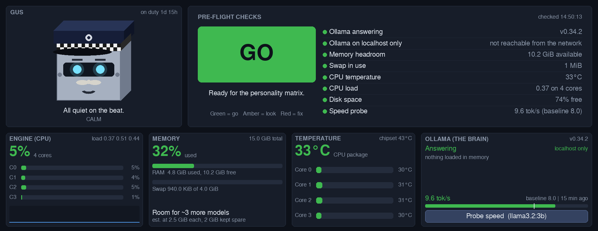
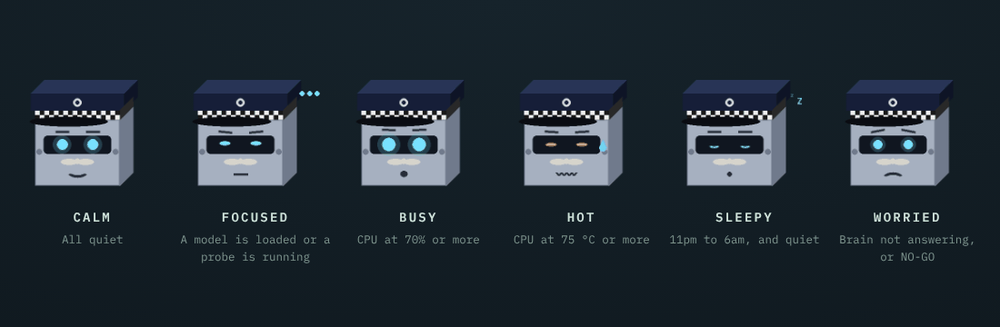

Part 1
A robot doesn't need legs
I wanted to build a little robot, with an ESP32 stick for its brain: a microcontroller the size of a USB memory stick. The stick gave up on me before the robot ever moved.
Then I looked at the machine I'd already saved from the scrap pile: a 2015 desktop with four cores, 16 GB of memory and a local AI model that already runs on it (that story is Saved from the scrap pile). It can't walk. But a home robot doesn't need to, if the house is his body: sensors for senses, an old tablet and our phones for faces, a camera for eyes, and characters for a voice.
So the little robot became a big one. Before giving him a personality, though, I wanted to know how much brain he could actually hold. You can't judge how much a personality will cost until you can see what thinking costs him. So his first piece is a dashboard: his vital signs, live.
Part 2
Security questions before a single line of code
Every project I build now starts with security questions, not features. A robot that lives in the house and will one day see and hear it deserves more of them than most. These are the answers, and they became the rules he's built on:
/proc and /sys.127.0.0.1, "this computer only", and never through a proxy.The rules aren't just written down. Gus's tests read his own source code and fail if it ever starts running commands, opening ports, deleting files or mentioning any web address other than 127.0.0.1. If a future change breaks a rule, the tests say no before I ever run it.
A rule that only lives in your head gets broken by your future self in a hurry. Put it in a test that can say no.
Part 3
Why Gus
He's named after Gus Bain, the steady old Edinburgh polis from Irvine Welsh's books: seen it all, keeps his head, watches the beat. That suits a robot whose first job is keeping an eye on the house. The letters stand for Guardian, Utility and Storyteller, which is the plan for his future. So he wears a chequered police cap. And a tache.
Before settling on a name I checked that nothing on Ubuntu already uses it. My first local AI tool was called chat, and Ubuntu already has a chat. Mine silently lost. Now which gus comes before any name.
Part 4
The pre-flight board
I already use "pre-flight checks" for my own work: before any command that changes something, run read-only checks first, look at the answers, then decide go or no-go. Gus does the same for his own brain. Eight checks, each green, amber or red:
- Is the AI answering? And which version.
- Is it on this computer only? Read from the kernel's own list of listening sockets.
- Memory headroom. Green above 4 GiB free, red below 2.
- Swap in use. A machine that's swapping is a machine that's struggling.
- CPU temperature. Amber at 70 °C, red at 85.
- CPU load, against the number of cores.
- Disk space.
- Speed. Press the probe button and he asks the AI the same fixed question every time and times the answer, so the results can be compared.
Any red makes the board NO-GO. Any amber, or anything not yet measured, makes it CHECK. Only when everything is green does he say GO.

Part 5
A face that never lies
The face is the part the family actually looks at, and I made one rule for it: every expression has to come from a real reading. He doesn't look busy for effect. If he looks busy, the CPU is busy.

He also blinks every few seconds, and after 11pm he goes on the night shift. On his first night I left him running, and by morning there was a steady line on his chart from one o'clock onwards: temperatures never above the mid-thirties, swap barely touched, and not one wobble.
Part 6
GO on the first night
At 01:44 on his first night, I pressed the probe button and every light went green. The speed came back at 6.2 tokens a second, just over the 6.0 line for green.
Good enough to pass. But a month earlier the same model on the same machine had measured 8.0. I noted it and went to bed.
Part 7
The morning the board went amber
The next morning I pressed the probe again: 5.9. Just under the line. The board turned amber, which is exactly what it should do. The board was right. The question was why.
The clue was on the board itself. Three of the four CPU cores were idling at 3 or 4 percent. The fourth was sitting at 48%, with nothing else running.
One core busy, the rest idle, on a machine doing "nothing". What would you check first?
The one thing that was running was Gus. I asked Linux how much CPU his own process was using:
$ top -bn1 -p "$(pgrep -f gus_dash.py | head -1)" | tail -1 79700 iain 20 0 1240632 150028 86856 R 70.0 1.0 321:23.30 python
70% of a core, and an R: always running, never resting. The robot built to measure his brain's performance was eating the CPU his brain needed. He was redrawing his entire 1920 × 1080 window 30 times a second, though most of what he shows changes once a second.
The obvious fix wasn't enough
Before changing anything, I measured. The test used a virtual screen of the same size, with the old and new versions side by side for 20 seconds each, twice:
- Before: 30 frames a second
- 64–68%
- Obvious fix: 10 frames a second
- 22%
- Real fix: paint only what changed
- 6%
The profiler showed something I hadn't guessed. Drawing the picture was cheap, about 5 ms. Pushing it to the screen cost 12 to 15 ms every time, whether it was the whole window or just his face. So drawing less often wasn't the answer. Pushing less often was.
The real fix: the numbers only change once a second, so repaint the whole board once a second. In between, only repaint his face, and only when it actually looks different. A calm Gus doesn't move except to blink, so he repaints at the start and end of each blink and nothing else. When he has moving parts (the thinking dots, the sweat, the z's) he animates at 5 frames a second. While the speed probe runs he keeps still, and while his window is minimised he doesn't draw at all.
The reading that wasn't
I installed the fix and checked again: 30%. Better, but nowhere near what the test had promised.
It took a moment to see it. I'd started the new Gus without closing the old one. Two of him were running, and my check took the first match, which was the old one. Measuring the new Gus by his own process number told the real story:
$ top -bn3 -d5 -p 115070 | grep 115070 115070 iain 20 0 750292 134004 86312 S 9.1 0.9 0:18.12 python 115070 iain 20 0 750292 134008 86312 S 10.2 0.9 0:18.63 python 115070 iain 20 0 750356 134008 86312 S 10.4 0.9 0:19.15 python
About 10%, and an S: asleep between frames, waking only when there's something to show.
Make sure you're measuring the thing you think you're measuring. "The process called gus" matched the wrong Gus. The process number didn't.
What it did for his brain
With only one Gus running, and him keeping still during the test, three probes in a row:
- Gus's own CPU, before
- 30–70%
- Gus's own CPU, after
- 9–10%
- Brain speed, before
- 5.9–6.2 tok/s
- Brain speed, after
- 9.4–9.6 tok/s
So the slowdown was Gus all along, and he's back to GO with room to spare.
The instrument can disturb what it measures. If your monitor is running on the machine it's monitoring, measure the monitor too.
Part 8
What he can't do (yet)
- He can't talk yet. The dashboard is only his body. His voice comes next.
- He can't see or hear yet. No cameras or sensors are connected.
- His speed test is one short question. It's good for comparing before and after on one machine, and not much else. It isn't a benchmark to compare against other computers.
- His face lags a little. Big numbers refresh once a second, not instantly. That's the price of not eating the brain.
- Temperatures need real sensors. In a virtual machine, or on some laptops, that line stays grey.
Part 9
Do Gus's checks yourself
Gus's code is private for now, but none of his checks are magic. Every one of them is something you can ask your own Linux machine in a terminal. If you've never opened one, Meet the terminal starts from nothing. For each check, guess the answer first, then run it.
1. Is your AI reachable from your network?
If you run Ollama, it listens on port 11434. Which addresses?
ss -tln | grep 11434
127.0.0.1:11434 means this computer only, which is good. 0.0.0.0 or * means anyone on your network could talk to it. If you don't run Ollama, try it on any port you know is open: ss -tln on its own lists them all.
2. Does your machine know its own temperature?
cat /sys/class/hwmon/*/name
Look for coretemp on Intel or k10temp on AMD. That's where Gus reads his fever.
3. Is anything eating one core?
top
Press 1 to see each core separately, and q to quit. One core much busier than the others usually means one program working flat out on one thread. Look at the S column: R is running, S is sleeping. A program that should be idle and shows R all the time is worth a look.
4. Is it what you think it is?
pgrep -fa python
This lists every Python program running, with its process number. If there are two of something you meant to run once, now you know why your numbers looked odd.
What came out of it
A body first, then a voice
Gus is a face, a heartbeat and a logbook so far. Next he gets a voice, through the same personality matrix that gave Dave his memory, and senses: a camera and sensors on a Raspberry Pi, reporting back to him. In time he'll be the front door to everything else on this machine: the games, the radio and the offline library, with nothing leaving the house. His one rule stays the same throughout. His world is the house, the whole house, and nothing outside it.
Security first, in code
Answer the security questions before the features, then write tests that fail if the answers ever change.
Measure the monitor
Gus was using 70% of a core to show his brain was slow. Fixing him made his brain 55% faster.
A face should never lie
Every expression comes from a real reading, so a glance at Gus tells you how the machine is doing.
Built your own home robot, or spotted a mistake? Tell me. Corrections are genuinely welcome.